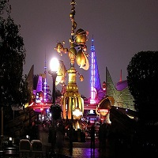

About
The world's largest and most famous music festival.
-

1955–1966
The "original" Tomorrowland incarnation
The first Tomorrowland opened at Disneyland on July 17, 1955, with only several of its planned attractions open, due to budget cuts. The construction of the park was rushed, so Tomorrowland was the last land to be finished. It became something of a corporate showcase, despite Walt Disney's reluctance. Monsanto Company, American Motors, Richfield Oil, and Dutch Boy Paint were some of the many companies to open showcases in Tomorrowland in the first few years. These additions were collectively so large in scope that they were televised as the second opening of Disneyland. New attractions came and some went as Walt Disney focused his efforts on the 1964–65 New York World's Fair. After the Fair closed, he turned his attention to a new Tomorrowland and the Florida Project, which would later become Walt Disney World.
-

1967–1997
"New Tomorrowland"
By 1966, Tomorrowland was becoming quickly outdated. Most of its attractions were only there as advertisements for various sponsors, such as Monsanto, despite the 1959 Tomorrowland expansion. In 1967, the area was completely rebuilt with new attractions and scenery. In 1993, The Walt Disney Company planned a major refurbishment, "Tomorrowland 2055". This Tomorrowland was planned to have more of an extraterrestrial theme, and was going to replace Mission to Mars with ExtraTERRORestrial Alien Encounter. In 1994, however, this plan was scrapped due to the poor initial financial performance of Euro Disneyland.
-

1995–1998
"Tomorrowland in Decline"
Between the years of 1995 - 1998 several Tomorrowland attractions were slated to be closed or remodeled. The Peoplemover, The Rocket Jets, Mission to Mars, Circle-Vision 360, Captain EO and the Starcade were all permanently closed or planned for renovation. The three-year makeover started only two years after the park's last major project: the construction of Mickey's Toontown. The land was not completely closed off the entire time, but major sections were blocked off to guests, and the entrance was finally walled up in 1997. As construction waged on, rumors about possible new attractions went rampant. Guests wondered if Tomorrowland would start to phase out transportation and space travel (its second main focus after home technologies in the 50s) in favor of a brand new theme. By the first months of 1998, New Tomorrowland was at the forefront of every Disneyland fan's mind, and the springtime opening drew major crowds. When Tomorrowland re-opened Disneyland had raised prices and many of the locals either moved on or aged out of using Tomorrowland as a "hang out."
-

1998–2004
The "New-New Tomorrowland" incarnation
Tomorrowland reopened on May 22, 1998, at the cost of a mere $100 million, as the land was hit with budget cuts from Disneyland's president at the time, Paul Pressler. It is loosely based on the retro-futurist concepts of Jules Verne that Disneyland Paris's Discoveryland featured. Following the opening of the New Tomorrowland for the summer of 1998, the Submarine Voyage was closed in September. In late 2003, Matt Ouimet became president of the Disneyland Resort and sought to change some of the cost-cutting trends that had become the status quo there. Space Mountain was closed for two full years while the ride was refurbished and repainted white, the original color of the attraction, and the track was completely replaced by a new track with the same track plan. The former Rocket Rods queue building was converted into Buzz Lightyear Astro Blasters for a 2005 opening.
-

2016–present
The "Season of the Force" Tomorrowland incarnation
At the 2015 D23 Expo, Disney announced that on November 16, 2015, Tomorrowland would launch a Star Wars-themed "Season of the Force", in celebration of Star Wars: The Force Awakens. Among the changes launched as part of the event were the new attraction Star Wars Launch Bay—an exhibition showcasing artwork and other materials related to the franchise, a Star Wars Rebels-themed update of Jedi Training Academy known as Jedi Training: Trials of the Temple, the addition of The Force Awakens-related content to Star Tours–The Adventures Continue, and a The Force Awakens-themed Space Mountain overlay known as Hyperspace Mountain.
-
Be Part
Of Our
Story!